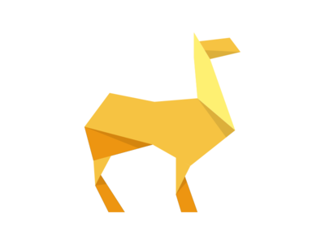

1. Camels can reach 7 feet in height (at the hump) and weigh up to 1500 pounds.
2.Camels are specially adapted to the life in desert.
3. Their eyes have three eyelids and two rows of eyelashes that prevent sand to enter their eyes.
Let's Start Making our 'ORIGAMI CAMEL'
Step 1) Fold the paper in half.
Step 2) Open the top flap of paper over to the right.
Step 3) Turn the paper over.
Step 4) Fold and Unfold the sides and the top along the dotted lines. You’ll use these creases in the next step.
Step 5) Fold in both sides along the existing creases making a Petal Fold.
Step 6) Repeat steps 7-9 on this side.
Step 7) Reverse Fold the back part down to make the back legs.
Step 8) Inside Reverse Fold the tip of the head.
The completed camel